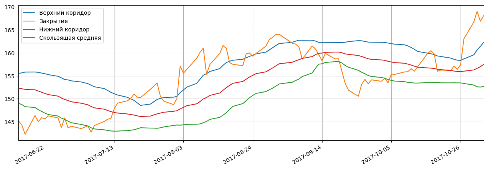
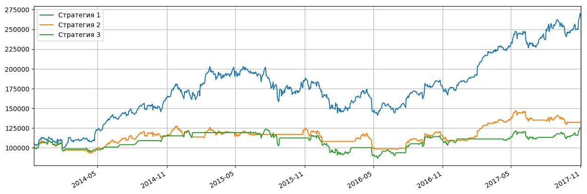

Котировки акций: Показать все
| Дата | Открытие | Минимум | Максимум | Закрытие | Объем |
|---|---|---|---|---|---|
| 2017-10-31 | 167.899994 ▲ | 166.940002 ▲ | 169.649994 ▲ | 169.039993 ▲ | 35 654 100.0 ▼ |
| 2017-10-30 | 163.889999 ▲ | 163.720001 ▲ | 168.070007 ▲ | 166.720001 ▲ | 44 700 800.0 ▲ |
| 2017-10-27 | 159.289993 ▲ | 158.699997 ▲ | 163.600006 ▲ | 163.050003 ▲ | 44 454 200.0 ▲ |
| 2017-10-26 | 157.229996 ▲ | 156.779999 ▲ | 157.830002 ▲ | 157.410004 ▲ | 17 000 500.0 ▼ |
| 2017-10-25 | 156.910004 ▲ | 155.270004 ▼ | 157.550003 ▲ | 156.410004 ▼ | 21 207 100.0 ▲ |
Японские свечи, объемы продаж, касательные 20-50:

Основные фин.показатели:
| Доходы (квартал), в млн.USD | 13 нед. 2017-07-01 | 13 нед. 2017-04-01 | 14 нед. 2016-12-31 | 13 нед. 2016-09-24 | 13 нед. 2016-06-25 |
|---|---|---|---|---|---|
| Общий доход | 45,408.00 | 52,896.00 | 78,351.00 | 46,852.00 | 42,358.00 |
| Общие эксплуатационные расходы | 34,640.00 | 38,799.00 | 54,992.00 | 35,091.00 | 32,253.00 |
| Операционный доход | 10,768.00 | 14,097.00 | 23,359.00 | 11,761.00 | 10,105.00 |
| Чистая прибыль | 8,717.00 | 11,029.00 | 17,891.00 | 9,014.00 | 7,796.00 |
| Пониженная прибыли на акцию (EPS) без ЧС | 1.67 | 2.10 | 3.36 | 1.67 | 1.42 |
| Баланс (квартал), в млн.USD | На 2017-07-01 | На 2017-04-01 | На 2016-12-31 | На 2016-09-24 | На 2016-06-25 |
| Всего текущих активов | 112,875.00 | 101,990.00 | 103,332.00 | 106,869.00 | 93,761.00 |
| Недвижимость/Имущество/Оборудование Всего | 68,981.00 | 65,124.00 | 62,759.00 | 61,245.00 | 57,991.00 |
| Всего активов | 345,173.00 | 334,532.00 | 331,141.00 | 321,686.00 | 305,602.00 |
| Общий долгосрочный долг | 89,864.00 | 84,531.00 | 73,557.00 | 75,427.00 | 68,939.00 |
| Всего обязательств | 212,748.00 | 200,450.00 | 198,751.00 | 193,437.00 | 179,061.00 |
| Общий капитал | 132,425.00 | 134,082.00 | 132,390.00 | 128,249.00 | 126,541.00 |
| Cash-flow (квартал), в млн.USD | 40 нед. 2017-07-01 | 27 нед. 2017-04-01 | 14 нед. 2016-12-31 | 52 нед. 2016-09-24 | |
| Поступления от операционной деятельности | 47,942.00 | 39,579.00 | 27,056.00 | 65,824.00 | |
| Поступления от инвестиционной деятельности | -36,504.00 | -33,324.00 | -19,122.00 | -45,977.00 | |
| Поступления от финансовой деятельности | -13,351.00 | -11,582.00 | -12,047.00 | -20,483.00 | |
| Чистый остаток денежных средств | -1,913.00 | -5,327.00 | -4,113.00 | -636.00 |
Полосы Боллинджера:
Последние финансовые новости: Показать все
| Дата | Заголовок | Источник |
|---|---|---|
| 2017-10-31 21:07 | Apple Inc. (AAPL) закрывается на 1,39% в день на 31 октября | equities |
| Акции Apple Inc. (AAPL) завершили торговый день во вторник на уровне $ 169,04, что составляет 1,39%, или 2,32 доллара за акцию, по объему 35,57 млн. Акций. Apple Inc - американская многонациональная технологическая компания. Он разрабатывает, производит и продает мобильные коммуникационные и мультимедийные устройства, персональные компьютеры и портативные цифровые музыкальные плееры. После открытия торгового дня на уровне $ 167.90 акции Apple Inc. торговались между $ 166,94 и $ 169,65. Apple Inc. в настоящее время имеет общий объем 5,17 млрд. Акций и в среднем видит 26,03 млн. Акций каждый день. В настоящее время акции имеют 50-дневную SMA в размере 158,06 долл. США и 200-дневную SMA в размере 146,74 долл. США, и она имеет высокий уровень в размере 168,07 долл. И минимум 104,08 долл. США за последний год. Его отношение P / E составляет 18,5, а отношение P / B составляет 6,59. Apple Inc. базируется в Купертино, штат Калифорния, и имеет 116 000 сотрудников. Генеральным директором компании является Тимоти Д. Кук. Индекс Dow Jones Industrial Average является самым старым и наиболее часто упоминаемым индексом фондового рынка для американского рынка акций. Наряду с другими крупными индексами, такими как S & P 500 и Nasdaq, он остается одним из самых заметных представлений фондового рынка для внешнего мира. Индекс состоит из 30 компаний с голубыми фишками и представляет собой взвешенный по цене индекс, в отличие от взвешенного индекса рыночной капитализации. Этот подход сделал его несколько спорным среди наблюдателей рынка. (См .: Мнение: DJIA - это реликвия, и нам нужно двигаться дальше). История индекса датируется вплоть до 1896 года, когда он был впервые создан Чарльзом Доу, легендарным основоположником редактора Wall Street Journal и основателем Dow Jones & Company, и Эдвард Джонс, статистик. С течением времени взвешенный по цене взвешенный индекс стал стандартной частью большинства основных ежедневных новостей и показал, что десятки разных компаний проходят через свои ряды, и только General Electric ($ GE) остается на индексе с момента его создания. | ||
| 2017-10-31 20:06 | Apple, Inc. Заработок: почему руководство является ключевым. Несмотря на более поздний запуск для флагманского iPhone от Apple, сможет ли технологический гигант увеличить доходы в своем праздничном квартале? | fool |
| Когда Apple (NASDAQ: AAPL) сообщит о своих квартальных результатах на этой неделе - незадолго до курортного сезона руководство технических гигантов в предстоящем квартале может в конечном счете стать наиболее важным показателем для инвесторов. Не только представляя праздничный период, но и период, когда продажи последних iPhone обычно набирают обороты, первый финансовый квартал (четвертый календарный квартал) компании сезонно является самым большим - длинным выстрелом. В первом квартале 2010 финансового года Apple, производитель Mac будет против рекордного квартального дохода, опубликованного в квартале прошлого года после выхода iPhone 7. Поэтому вопрос заключается в том, будет ли Apple предоставлять руководство для доходов в первом квартале выше своей верхней линии в первом квартале финансового 2017 года? Руководство Apple, представленное в отчете о доходах за четвертый квартал за первый квартал, возможно, более важно, чем обычно, в этом году, поскольку график запуска Apple для своих новых iPhone'ов на этот раз намного отличается от обычного. Как правило, Apple начинает отправлять все свои новые iPhone до конца четвертого квартала. В этом году, однако, Apple анонсировала как iPhone 8, так и iPhone X в сентябре, но только отправила iPhone 8 до окончания квартала. Отгрузки iPhone X не начинаются до 3 ноября - более месяца в праздничный квартал. Это не только оставляет меньше времени для покупки клиентами iPhone X, но более поздняя дата отправки также является показателем ограниченного предложения для флагманских iPhone. Если бы Apple смогла наращивать производство iPhone X раньше, компания отправила iPhone X вместе с iPhone 8. Так как iPhone X не начал поставляться до ноября, Apple может не наращивать поставки iPhone X достаточно быстро, чтобы соответствовать производству новых iPhone в течение праздничного квартала в предыдущие годы, особенно в сравнении с рекордным кварталом продаж Apple в прошлом году. Действительно, на веб-сайте Apple в настоящее время говорится, что заказы iPhone X, заказанные сегодня, не будут отправляться в течение пяти-шести недель, предполагая, что производство уже работает позади спроса. Конечно, есть еще способы, которыми Apple может сообщить о рекордном праздничном квартале. Во-первых, iPhone 8 может потенциально спасти день. В настоящее время заказы на iPhone 8 отправляются уже в четверг, 2 ноября. Если спрос на iPhone 8 будет достаточным, это может компенсировать любой недостаток производства от iPhone X. Во-вторых, производство и поставки iPhone X могли бы значительно улучшиться конец квартала. Наконец, другие сегменты Apple могли бы способствовать исключительно сильному росту. Примечательно, что хотя iPhone представляет половину дохода Apple, другие сегменты растут быстрее. Выручка Apple в первом квартале финансового 2017 года составила 78,4 млрд. Долл. США, что на 2,5% выше, чем в первом финансовом квартале 2016 года. Таким образом, когда Apple дает рекомендации по доходам за первый квартал в своем отчете за четвертый квартал, средняя точка диапазона руководства должен превысить 78,4 млрд. долл. США, чтобы предположить, что руководство ожидает роста. Тем не менее, для руководства Apple, чтобы соответствовать ожиданиям рынка, середина диапазона руководства Apple должна составлять около 85 миллиардов долларов США, что означает рост в годовом исчислении примерно на 9%. В среднем, это то, что аналитики ожидают от дохода Apple в первом квартале. Другими словами, аналитики, похоже, делают ставку на то, что между ростом производства iPhone X, продажей сентябрьского iPhone 8 от компании и ростом в других сегментах Apple, в настоящее время наблюдается более сильный рост. Apple сообщит о доходах за первый квартал после закрытия рынка в четверг, 2 ноября. | ||
| 2017-10-31 15:15 | Apple, Inc. хочет почистить Qualcomm модемы, акции Qualcomm Fall. Такой шаг принес бы большой укус из верхней линии Qualcomm. | fool |
| Apple (NASDAQ: AAPL) теперь рассматривает возможность подключения модемов Qualcomm (NASDAQ: QCOM) в целом для линейки iPhone 2018 года, согласно паре отчетов Reuters и The Wall Street Journal. Это не вызывает удивления, учитывая, насколько спорным становится эскалация юридической битвы между двумя компаниями. Речь идет о определенном программном обеспечении, которое Apple использует для тестирования компонентов, которые Qualcomm, по сообщениям, прекратила предоставлять Apple. Это предполагает агрессивный переход к моделям Intel (NASDAQ: INTC), и Apple может даже использовать менее известных поставщиков, таких как MediaTek, для своих современных потребностей. На этом раннем этапе ничего не было доработано, но, похоже, Apple уделяет этому вопросу серьезное внимание. На данный момент акции Qualcomm упали на 7%. Возвращаясь к первоначальной жалобе с января 2017 года, стало ясно, что Apple хочет много лет переключать поставщиков модемов. Как минимум, он всегда хотел добавить дополнительных поставщиков, что снизило бы риск предложения, предоставляя переговорные рычаги для обеспечения более выгодного ценообразования на объем, что, в свою очередь, напрямую приведет к экономии затрат. Вот что Apple написала в январе (выделено мной): Компания не смогла перейти с Qualcomm из-за эксклюзивного соглашения о поставках, срок действия которого истек в 2016 году. Ключевая линия Qualcomm в значительной степени опиралась на Apple и Samsung как на своих крупнейших клиентов в течение многих лет, причем два смартфона juggernauts составили 49% продаж в 2014 финансовом году. Эта цифра, которая включает выручку от лицензирования, а также продажи чипов, снизилась до 45% в 2015 финансовом году и 40% в 2016 финансовом году. Другими словами, у Qualcomm по-прежнему довольно много контактов с Apple, и это принесет довольно значимый успех, если Apple сделает вызов для отключения модемов Qualcomm. На техническом уровне Apple, возможно, может переключиться на Intel для всех своих потребностей модема в 2018 году. Модем Intel, который поддерживает 2017 iPhone, не поддерживает сети CDMA, такие как Verizon и Sprint в США (эти модели iPhone по-прежнему используют базовые полосы Qualcomm). Предстоящий XMM 7560 от Intel будет поддерживать CDMA, и, хотя он может все еще отставать от производительности модема Qualcomm в определенных областях, он должен быть вполне достаточным для основных потребителей. Intel продолжает углублять свои отношения с Apple, и конкуренция Apple с практикой Qualcomm является «принципиальной позицией». Помимо соображений валовой прибыли, Apple имеет множество других причин, чтобы сделать коммутатор. | ||
| 2017-10-31 12:00 | Facebook против Apple: что для вас лучше подходит для Хэллоуина? | nasdaq |
| Похоже, технические воротилы ждут Хэллоуина, чтобы сообщить о своих квартальных цифрах. Инвесторы занимают такие позиции, несмотря на постоянные опасения, что торговля технологиями стала «переполненной». И почему бы нет? Технология прошла долгий путь, развиваясь из катастрофы dot-com, чтобы стать одним из самых желанных секторов современного рынка. Кроме того, инициатива Белого дома по сокращению налоговых ставок обеспечивает столь необходимые непредвиденные расходы для таких компаний, которые в основном накопили деньги за пределами Соединенных Штатов. Крупнейший поставщик социальных сетей в Америке, Facebook Inc. FB, должен сообщить о прибыли 1 ноября, а Apple Inc. AAPL опубликует свои результаты 2 ноября. Ожидается, что Facebook заработает большой этот сезон заработка, благодаря увеличению доходов от рекламы. Исследовательский отчет Citigroup Inc C показал, что интернет-гигант увидит 47-процентное увеличение доходов от рекламы в третьем квартале. Если это произойдет, компания, скорее всего, сможет снова превзойти прогнозы аналитиков. Мобильный и живой видеообъявление Facebook продолжает окупаться, поскольку Instagram становится важным потоком доходов. Помимо мобильных и видео, ожидается, что возможности монетизации других дочерних компаний компании - Messenger, WhatsApp и Oculus - в сочетании с огромной базой пользователей будут стимулировать рост. Таким образом, у компании есть Zacks Rank # 1 (Сильная покупка). Приходя в Apple, руководство ожидает роста доходов iPhone в четвертом финансовом квартале. Самый ценный в мире продукт, богатый ценными продуктами компании, который теперь включает Watch 3 и 4K TV, также поможет его акциям набирать обороты. Инвестиции компании в размере 1 миллиарда долларов на приобретение оригинального контента и его план выхода на рынок распространения фильмов будут способствовать дальнейшему росту доходов. Сейчас у компании есть Zacks Rank # 2 (Купить) (подробнее: Свежий кусочек Apple на этой неделе: глобальная неделя вперед). Давайте теперь быстро посмотрим, как эти колокольчики сложены друг против друга. Вы можете увидеть полный список сегодняшних акций Zacks # 1. Другие крупные доходы за этот период включают в себя Tesla Inc TSLA, ранее Tesla Motors, Inc. Эффективность цен Facebook и Apple были сильными исполнителями в этом году, легко опередив рост S & P 500 на 15%. Тем не менее, с ростом на 56,3% по сравнению с прошлым годом, Facebook вырос на фоне роста Apple на 43,9%. оценка Здесь мы рассматриваем коэффициенты роста цен на прибыль (PEG), чтобы оценить их с точки зрения оценки. Это наиболее подходящее соотношение, поскольку оно учитывает потенциальный потенциал компаний. При коэффициенте PEG 1,27, Apple недооценена по сравнению с S & P 500 1,93. Однако Facebook значительно недооценен, поскольку его ПЭГ составляет 1.11. Валовая прибыль По сравнению с другими отраслями, технические компании имеют относительно более высокий уровень валовой рентабельности. Это особенно актуально для акций с более высокой стоимостью бренда. Но Apple оценивает этот показатель как низкий, поскольку его валовая прибыль TTM составляет 38,5% по сравнению с 48,5% S & P 500. Facebook отличается рентабельностью, а валовая маржа составляет 86,5%. Дивидендная доходность Facebook не предоставляет дивиденды, в то время как Apple предложила дивидендную доходность в 1,51% по сравнению с предыдущим годичным периодом. Однако это меньше, чем доходность более широкого рынка за тот же период, который составляет 1,84%. История заработка, ESP и оценки изменений Facebook и Apple поставили положительные сюрпризы в течение четырех кварталов. Тем не менее, средний показатель в Facebook на 11,3% превысил уровень Apple в 3,8%. Предполагается, что Facebook будет зарабатывать 1,30 доллара США за акцию в размере 9,88 млрд. Долл. США, что на 19,5% и 40,9% больше, чем годом ранее. Ожидается, что Apple также будет расти в $ 1,86 за акцию на 51,17 млрд. Долл. США по сравнению с 1,66 долл. США на 46,56 млрд. Долл. США за аналогичный период прошлого года (далее: «Сила во всем мире в третьем квартале заработка»). Когда дело доходит до Earnings ESP, Apple является явным победителем с + 1,17% против 3,66% Facebook. Заключить Интернет-компания социальных сетей держит преимущество над создателем iPhone, когда речь заходит о цене, фундаментальной оценке и валовой прибыли. Кроме того, ожидается, что рост прибыли на одну акцию в Facebook превысит показатели Apple в указанном квартале. Это также видно из впечатляющей истории успеха Facebook за последний год. Следующая амазонка Уолл-Стрит Закс EVP Кевин Матрас считает, что этот знакомый запас только начал подниматься, чтобы стать одной из самых больших инвестиций всех времен. Это возможность раз в год инвестировать в чистый гений. Нажмите для подробностей >> Хотите получить последние рекомендации от Zacks Investment Research? Сегодня вы можете скачать 7 лучших акций на следующие 30 дней. Нажмите, чтобы получить бесплатный отчет Citigroup Inc. (C): Отчет о свободном запасе Facebook, Inc. (FB): Отчет о свободном запасе Tesla Inc. (TSLA): Отчет о свободном запасе Apple Inc. (AAPL): отчет по свободному фондовому анализу Чтобы прочитать эту статью на Zacks.com, нажмите здесь. Мнения и мнения, выраженные здесь, являются мнениями и мнениями автора и не обязательно отражают мнения Nasdaq, Inc. | ||
| 2017-10-31 08:00 | Как iPhone X может увеличить долю Apple Inc. до $ 200 и $ 1T. | finance.yahoo |
| Все Apple Inc. (NASDAQ: AAPL) должны сделать, чтобы достигнуть рыночной капитализации в 1 триллион долларов, доходит до 200 долларов за акцию, что на 21% выше, чем в то время, когда акции AAPL торгуются; так что это не вопрос, если, но когда. Источник: через Apple Его прибыль была получена 2 ноября после закрытия рынков, и, хотя хорошие цифры могут подтолкнуть акции AAPL выше, и, несмотря на нынешний митинг, я сомневаюсь, что они будут достаточно сильными, чтобы сделать это на этой неделе. Фактически, более вероятно, что цена акций AAPL упадет после прибыли, учитывая слабые продажи iPhone 8, которые, как говорят, настолько укрощены, что iPhone 7 нарушает его. Технический гуру InvestorPlace Брэд Мун недавно сообщил, что опрос покупателей KeyBanc Capital Markets покупателей iPhone обнаружил, что многие покупали iPhone 7, потому что для подтверждения его более высокой цены недостаточно iPhone для поддержки iPhone 8. InvestorPlace - новости фондового рынка, советы по продажам и советы по торговле Яблоки в четвертом квартале 2017 года заработают, если это правда. IPhone 8 был просто предложением Apple верным в сентябре, когда оба телефона были запущены. Тем не менее, я подозреваю, что Тим Кук и компания больше беспокоились о доставке iPhone X, из-за чего клиенты захотят сбросить более 1000 долларов за телефон, эквивалентный месячной арендной плате для многих людей, живущих за пределами крупных городов. Как игра iPhone X будет иметь много общего с тем, как быстро AAPL акции доходят до 200 долларов. Ранние предварительные заказы кажутся сильными. Мы наблюдали время отгрузки для iPhone X до 5-6 недель в течение нескольких минут после того, как Apple открыла предварительные заказы, где они провели в минувшие выходные, написал аналитик Nomura Джеффри Кваал в записке для клиентов. Это опережает 2-3 недели во время запуска iPhone 7 Plus и 2-4 недели во время запуска iPhone 6 и 6s. Источник: Statista Apple испытывала трудности с получением компонентов для нового телефона, и в результате она сократила производство iPhone iPhone на 50% до 20 миллионов. Это означает, что очень важный сезон продажи праздничных дней может оказаться не столь выгодным для компании, которая подталкивает большую зарплату во второй квартал финансового года 2018 года, когда на рынок попадут больше телефонов. Таким образом, результаты Q2 2018 не выйдут до мая следующего года, что означает, что акции AAPL могут не тестировать 200 долларов США не менее семи или восьми месяцев. По крайней мере, не с iPhone X, действующим как катализатор. Еще в феврале я написал, что iPhone был бритвой в бизнес-модели, подобной Apple, и такими услугами, как App Store, были клинки. Повторяющийся доход - это то, что будет продолжать расти. Nothings изменились в отношении бизнеса Apple, что привело бы меня к изменению моего мнения. Долгосрочный, я все еще чувствую это. Однако недавно аналитик Morgan Stanley (NYSE: MS) предположил, что Apple будет поставлять 262 миллиона iPhone в 2018 году, что на 31 миллион больше, чем в рекордном году 2015 года. Из этих 262 миллионов iPhone, 47% будет iPhone X. X $ 200 дороже iPhone 8 Plus. По данным Morgan Stanleyys, iPhone X будет генерировать продажи в размере 123 млрд. Долл. США в 2018 году на основе 123 млн. Единиц. Это различие в 200 долларов - это дополнительный годовой доход в размере 25 миллиардов долларов США или на 18% больше, чем доход от iPhone в 2016 году в размере 137 миллиардов долларов. Средняя цена продажи iPhone в 2016 году составила 645 долларов. Используйте этот номер для оставшихся 53% или 139 миллионов iPhone, и вы получите доход в размере 90 миллиардов долларов. Добавьте 123 миллиарда долларов, и вы получите общий доход iPhone iPhone за 2018 год на 213 миллиардов долларов или на 55% выше, чем в 2016 году, и на 37% выше, чем в 2015 году. Таким образом, несмотря на важность дохода от своих услуг, успешный iPhone X может стать катализатором для запуска Apple на пути к рыночной капитализации в 2 триллиона долларов. Если количество яблок не ужасно, я мог бы увидеть, что его акции достигли 200 долларов благодаря Дню благодарения. Если нет, то в День Рождества, похоже, подходящее время для преодоления порога в 1 триллион долларов. На момент написания этой статьи Уилл Эшворт не занимал должности ни в одной из вышеупомянутых ценных бумаг. Сообщение «Как iPhone X может подтолкнуть Apple Inc. Акции до $ 200 и $ 1T». Впервые появилась на InvestorPlace. | ||
Рекомендации аналитиков:

Стратегии:
Индекс RSI:

Индекс MACD:

Сигнальная шкала 1: